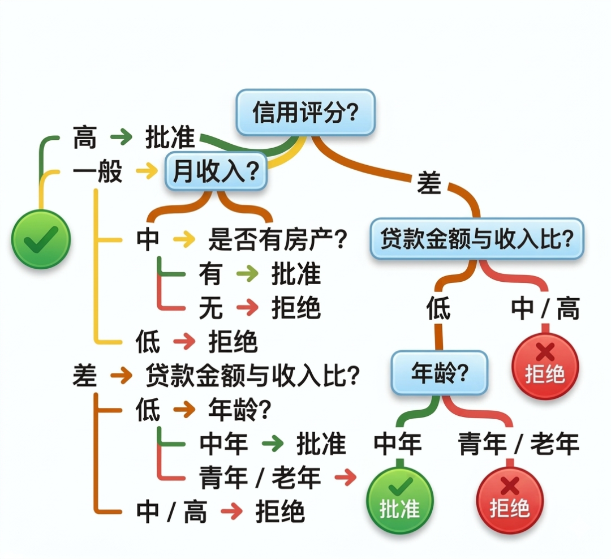
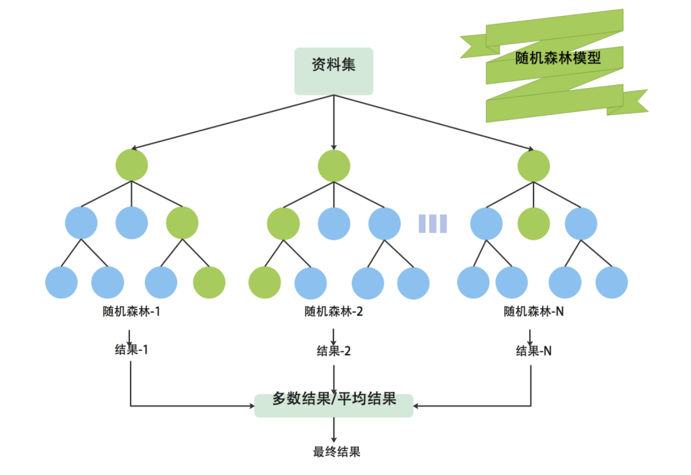
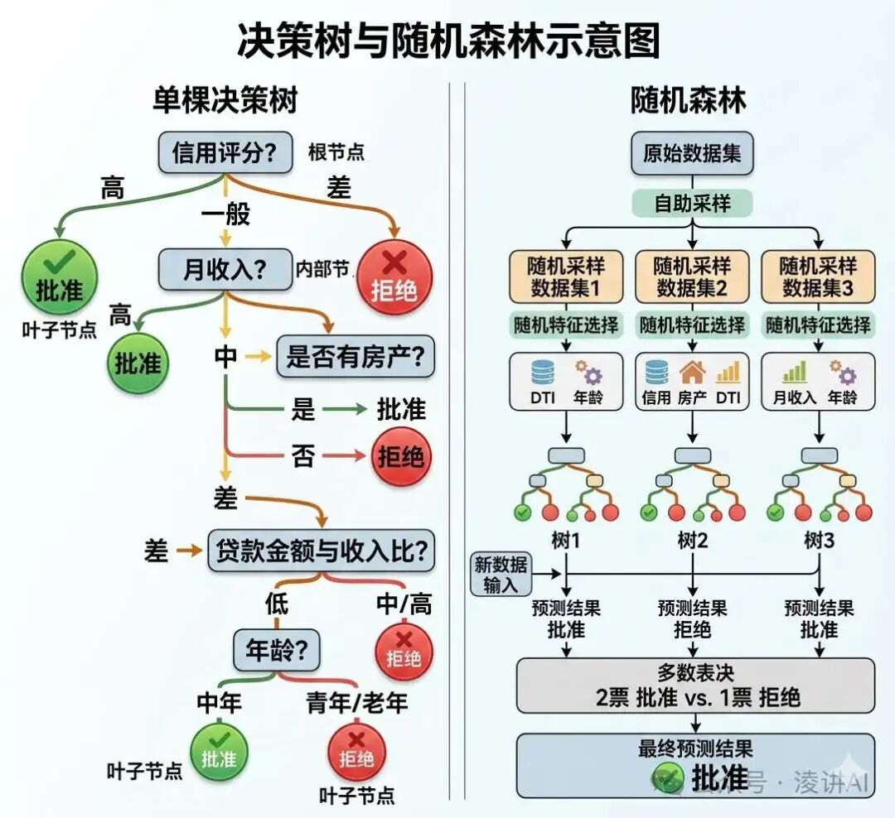

"决策树的魅力在于，它能将复杂的决策过程分解为一系列简单的是非判断，就像人类面对选择时的思考方式"--利奥·布雷曼（Leo Breiman），随机森林发明者
今天我们要来学习一种新的算法--决策树，以及由多棵决策树组成的集成学习方法--随机森林。这种算法一听名字可能感觉会很复杂，但是决策树加了"决策"二字之后就变得更简单易于理解了，我们用一个生活中非常贴切的例子说明什么是决策树，以下是简易的银行放款风控系统：

通过一颗树状结构，以根节点"信用评分（高或低）"为基础，进行分叉，条件层层筛选，得出最终是否"批贷"的结论，这个决策的流程就是决策树。
决策树是一种非参数的有监督学习方法。这里的"非参数"，不是说它完全没有参数，而是说它不像线性回归那样，预先假设一个固定形式的函数。它的核心目的是通过构建一系列的 "if-else" 规则对数据进行划分，最终完成分类或者回归。
决策树想做好的核心目标，就是不断把数据切分得更"纯"。什么叫做"纯"呢？比如一筐水果，里面只有苹果，和里面既有苹果、又有梨、还有香蕉相比，前者显然更纯。所谓一个节点"更纯"，本质上就是这个节点里的样本，尽量都属于同一类别。
构建一个好的决策树难点在于三个：
第一是特征选择问题。一次贷款审批，这么多审批条件（即"特征"）按照什么顺序来"排序"，哪个优先级更高？四五个条件还好，但是一旦条件多了怎么办？特征选的好，可以提升审批的效率。
第二是树划分的停止条件是什么？因为是决策树是将复杂问题分解为更为简单的问题，"分而治之"导致其是一个循环生成的过程，所以不可能无限产生分支，一定有停止分裂的条件。
第三个难点是决策树的优化，要防止其过拟合。如果一棵树太细，可能可以完美的匹配现有数据（训练时候的数据），但是遇到新数据的时候，可能就错误百出。可以说我们解决了这三个难点，就搞清楚了决策树和随机森林算法。
首先来说决策树，我们还是以金融风控的贷款审批场景为例，比如现在有个银行，他们的机器学习工程师经过特征工程，选择以下 6个核心特征作为决策树的节点（现实中会更复杂）：
有了这 6 个特征之后，我们就可以开始构建我们的决策树了，如果让你按照生活经验或者金融专业的知识，你会怎么利用这5个特征来构建一颗"好用"的决策树呢？
首先我们要对树的结构进行分析，一颗决策树主要如下构成：
通过分析决策树的结构，我们知道根节点就是整个数据集划分的起点，那么我们要选择哪个特征作为首次分裂的节点呢？
根节点的特征选择是很困难的：信用评分很重要，有没有房做抵押也很重要，那我们到底应该先选择哪个节点进行分裂呢？是先选择信用评分，还是先选择有没有房作为抵押呢？
能不能这样思考？就是假如能够使得每选择一个特征，就能最大化的减小不确定性，可以不可以说这个特征就应该排在更前面。这样看减少不确定性的过程有点像逆熵增的过程了，什么叫做减少不确定性呢？
比如每次评估贷款审批的时候，如果发现近期三个月有逾期6次，那么其他条件都不用看了，可以直接拒绝，这就使得确定性最高了。这个算法有个专门的名字，叫做"信息增益"，它的公式如下：
$$ \underbrace{\text{Gain_ratio}(a, D)}_{\text{特征}a\text{对数据集}D\text{的增益率}} = \frac{\underbrace{\text{Gain}(a, D)}_{\text{特征}a\text{对数据集}D\text{的信息增益}}}{\underbrace{\text{IV}(a)}_{\text{特征}a\text{的固有值}}} $$除了信息增益，还有一个数学工具可以对特征进行选择，这个数学工具就是基尼指数，基尼指数是决策树算法中用来衡量数据不纯度的指标，类似于"混乱程度"。数值越小，说明当前数据集中的样本越纯（即属于同一类别的概率越高），分类效果越好，这怎么理解呢？
比如你有一筐水果，筐里全是苹果（纯度100%），此时基尼指数为0；如果筐里苹果和橙子各占一半（混乱程度最高），则基尼指数为0.5。
决策树的目标就是通过特征划分，让每个子筐尽可能只装一种水果。下面这个树基尼指数的计算公式：
$$ \underbrace{Gini(D)}_{\text{数据集}D\text{的基尼不纯度}} = 1 - \underbrace{\sum_{k=1}^K}_{\substack{\text{对数据集}D\text{中} \\ K\text{个类别求和}}} \underbrace{p_k^2}_{\text{第}k\text{类样本占比的平方}} $$那么信息增益和基尼指数的区别是什么呢？它们本质上都是在回答同一个问题：怎样划分，才能让子节点更纯？
只不过，信息增益是从"熵下降了多少"这个角度来衡量，基尼指数则是从"类别混合程度下降了多少"这个角度来衡量。
现在有以上两个数学工具都可以构建决策树，我们怎么选择使用哪个工具呢？实际上这两个数学工具很多时候更加偏向于采用基尼指数，因为其计算效率更高，下面我将基于基尼指数完成上面6个特征构建决策树的过程：
我们先看一个极简的贷款审批样本表：
| 信用评分 | 月收入水平 | 是否有房产抵押 | 年龄 | 贷款金额与收入比 | 工作稳定性 | 贷款结果 |
|---|---|---|---|---|---|---|
| 良好 | 高 | 是 | 中年 | 低 | 稳定 | 批准 |
| 良好 | 中 | 否 | 青年 | 中 | 一般 | 批准 |
| 一般 | 高 | 是 | 中年 | 中 | 稳定 | 批准 |
| 一般 | 低 | 否 | 青年 | 高 | 不稳定 | 拒绝 |
| 差 | 中 | 是 | 中年 | 低 | 一般 | 拒绝 |
| 差 | 低 | 否 | 老年 | 高 | 不稳定 | 拒绝 |
| 一般 | 中 | 是 | 中年 | 高 | 稳定 | 批准 |
| 差 | 高 | 是 | 青年 | 中 | 不稳定 | 拒绝 |
在这个初始数据集中，一共有 8 个样本，其中 4 个批准，4 个拒绝，因此当前节点并不纯。接下来，我们要比较不同特征分裂后，谁的加权基尼不纯度更小。
先看"信用评分"这个特征：
可以看到，按"信用评分"来划分后，有两个分支已经非常纯了，只有"信用评分 = 一般"的分支还存在混合。
因此，从直观上看，"信用评分"是一个很适合作为根节点的候选特征。
如果进一步把所有候选特征的分裂结果都算成加权基尼不纯度，那么我们就选择"分裂后加权基尼不纯度最小"的那个特征作为根节点。
结论：在这个例子里，我们选择"信用评分"作为根节点，因为它能够让划分后的数据更纯。
现在继续看"信用评分 = 一般"这个分支。这个分支里共有 3 个样本，其中：
说明这个节点还不够纯，需要继续分裂。这时候我们可以比较它内部其他候选特征的划分效果。例如：
（1）按"月收入水平"分裂
在这个极简样本里，按"月收入水平"继续划分后，3 个子节点恰好都变纯了。
（2）按"是否有房产抵押"分裂
这个划分也会让两个子节点都变纯。所以在这个小例子里，"月收入水平"和"是否有房产抵押"都可能成为不错的下一层划分特征。
现实中，算法会通过计算具体指标来自动选择；而在这个小样本里，我们主要是帮助大家理解"继续找一个能让节点更纯的特征"这个思想。
决策树不能无限往下长，否则很容易长成一棵"记忆训练数据"的怪树。
一般来说，当出现以下情况时，就可以停止分裂：
例如，在上面的样本里，"信用评分 = 差"这个分支已经是 3 个样本全部拒绝，那么它其实已经足够纯了，就没有必要继续往下分裂。
但是这棵树看着会不会太大了？我们真的需要那么多分支吗？如果删掉一两个分支，这个算法的准确率会下降吗？
还真有一种方法，可以在尽量不损害泛化能力的前提下，对决策树进行优化。这就是决策树中的剪枝技术。剪枝主要分为预剪枝和后剪枝：
这两种技术都是为了优化决策树、降低过拟合风险的。
不过，单棵决策树即便做了剪枝，仍然可能对训练数据中的偶然噪声比较敏感。于是，就引出了一个更强大的思路：随机森林。
不知道大家有没有注意到一个问题，就是上面的这颗决策树还存在一点瑕疵，上面的收入都是比较高的，但不是每个人都能够达到月收入10w/月，还有很多人是几千块一个月嘛，如果有个人几千块一个月，这个决策树就失灵了，就通不过贷款审批了，但是如果这个人的信用很好呢？也是可以考虑一下的嘛。
样本量非常小，特征分档也比较粗糙，远远不能覆盖真实银行风控中的复杂情况。决策树生成过程中倾向于生成复杂的分支结构（如深度过大的树），导致对训练数据中的噪声或异常值过度敏感，在测试数据上泛化能力差。
例如，在贷款审批场景中，若某客户因数据录入错误导致收入异常高，单棵决策树可能生成"收入高即批准"的规则，而忽略其他特征的影响。
所以，随机森林就是为了解决单棵决策树泛化能力不足这个问题的一种进阶方法。
更准确地说，随机森林是一种以决策树为基学习器的集成学习算法。 它的核心思想不是只造一棵树，而是造很多棵彼此有差异的树，然后让这些树一起投票，减少单棵树的偶然性。
随机森林这个名字的由来也是其核心逻辑，那就是随机性，其有两个核心的随机，样本随机和特征随机。
随机森林会从原始训练数据中，进行有放回抽样（bootstrap sampling），为每一棵树单独生成一个训练子集。
注：有放回的数据抽样方法称之为Bootsrap
这意味着：
示例：在贷款审批场景中，某棵树的训练集可能包含客户A两次，而客户B未被选中，另一棵树则可能反向分布。
这样做的核心目的，不是简单地"反复切训练集和验证集"，而是让不同的决策树看到不同的数据子集，从而形成差异化的树群，降低模型之间的相关性。
树与树之间越不一样，最后集成起来，通常越不容易过拟合。
除了样本随机，随机森林还会在每棵树的每个分裂节点上，只从全部特征中随机挑选一部分特征参与竞争，而不是让全部特征都来争夺这次分裂机会。
比如，在信用评分、月收入、房产抵押、年龄、贷款金额与收入比、工作稳定性这 6 个特征中，某一个节点可能只随机抽出 3 个特征，再从这 3 个特征里选出当前最合适的那个做分裂。
示例：某棵树可能仅用"信用评分"和"是否有房产抵押"分裂节点，另一棵树则用"年龄"和"贷款金额与收入比"。
这样做的好处是：即便"信用评分"特别强，也不会每棵树都死死盯着它。这会进一步增加树与树之间的差异，避免整个森林"长得都一样"。
通过上面两种方式的结合，使得整个训练过程中使得每棵树独立生长，不进行剪枝，最终形成多样化的树群。
通过"样本随机 + 特征随机"这两种方式，随机森林就能训练出很多棵彼此不同的决策树。在经典随机森林中，这些树通常会尽量充分生长，而不是像单棵决策树那样强依赖剪枝。
当有一个新的客户样本进入模型时，森林里的每一棵树都会独立给出一个判断：
最后，再通过多数投票（分类任务）或者平均值（回归任务），得到随机森林的最终输出。
集成预测：对于新的输入样本，树群中的每棵决策树都会进行预测，最终通过投票或加权平均等方式决定结果。

相比于决策树，由多棵树构成的随机森林有以下优势：
（1）抗过拟合能力：通过数据与特征的双重随机性，减少单颗树对噪声数据（如异常收入记录）的敏感度，提升模型的稳定性。
（2）特征重要性评估：随机森林能够大致衡量每个特征对结果的贡献。例如，信用评分可能比年龄更重要，房产抵押可能比工作稳定性更关键。这对业务分析很有帮助，因为它不仅告诉我们"结果是什么"，还可以帮助我们理解"哪些因素更关键"。
（3）处理高维数据与缺失值：当特征数量比较多时，随机森林仍然往往能保持不错的效果。即使部分特征缺失（如客户未填写工作稳定性），仍能通过其他特征组合完成预测。
决策树和随机森林的价值，并不只是它们本身能解决分类或回归问题，更重要的是，它们背后的树模型思想与集成学习思想，直接启发了后续很多更先进的方法，例如 XGBoost、LightGBM 等。
